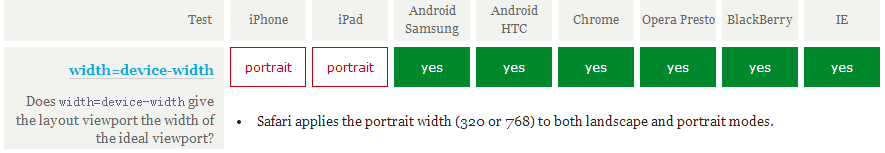
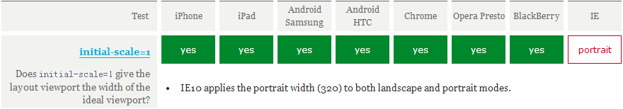

在移动设备上进行网页的重构或开发，首先得搞明白的就是移动设备上的viewport了，只有明白了viewport的概念以及弄清楚了跟viewport有关的meta标签的使用，才能更好地让我们的网页适配或响应各种不同分辨率的移动设备。
一、viewport的概念
通俗的讲，移动设备上的viewport就是设备的屏幕上能用来显示我们的网页的那一块区域，在具体一点，就是浏览器上(也可能是一个app中的webview)用来显示网页的那部分区域，但viewport又不局限于浏览器可视区域的大小，它可能比浏览器的可视区域要大，也可能比浏览器的可视区域要小。在默认情况下，一般来讲，移动设备上的viewport都是要大于浏览器可视区域的，这是因为考虑到移动设备的分辨率相对于桌面电脑来说都比较小，所以为了能在移动设备上正常显示那些传统的为桌面浏览器设计的网站，移动设备上的浏览器都会把自己默认的viewport设为980px或1024px（也可能是其它值，这个是由设备自己决定的），但带来的后果就是浏览器会出现横向滚动条，因为浏览器可视区域的宽度是比这个默认的viewport的宽度要小的。下图列出了一些设备上浏览器的默认viewport的宽度。

二、css中的1px并不等于设备的1px
在css中我们一般使用px作为单位，在桌面浏览器中css的1个像素往往都是对应着电脑屏幕的1个物理像素，这可能会造成我们的一个错觉，那就是css中的像素就是设备的物理像素。但实际情况却并非如此，css中的像素只是一个抽象的单位，在不同的设备或不同的环境中，css中的1px所代表的设备物理像素是不同的。在为桌面浏览器设计的网页中，我们无需对这个津津计较，但在移动设备上，必须弄明白这点。在早先的移动设备中，屏幕像素密度都比较低，如iphone3，它的分辨率为320x480，在iphone3上，一个css像素确实是等于一个屏幕物理像素的。后来随着技术的发展，移动设备的屏幕像素密度越来越高，从iphone4开始，苹果公司便推出了所谓的Retina屏，分辨率提高了一倍，变成640x960，但屏幕尺寸却没变化，这就意味着同样大小的屏幕上，像素却多了一倍，这时，一个css像素是等于两个物理像素的。其他品牌的移动设备也是这个道理。例如安卓设备根据屏幕像素密度可分为ldpi、mdpi、hdpi、xhdpi等不同的等级，分辨率也是五花八门，安卓设备上的一个css像素相当于多少个屏幕物理像素，也因设备的不同而不同，没有一个定论。
还有一个因素也会引起css中px的变化，那就是用户缩放。例如，当用户把页面放大一倍，那么css中1px所代表的物理像素也会增加一倍；反之把页面缩小一倍，css中1px所代表的物理像素也会减少一倍。关于这点，在文章后面的部分还会讲到。
在移动端浏览器中以及某些桌面浏览器中，window对象有一个devicePixelRatio属性，它的官方的定义为：设备物理像素和设备独立像素的比例，也就是 devicePixelRatio = 物理像素 / 独立像素。css中的px就可以看做是设备的独立像素，所以通过devicePixelRatio，我们可以知道该设备上一个css像素代表多少个物理像素。例如，在Retina屏的iphone上，devicePixelRatio的值为2，也就是说1个css像素相当于2个物理像素。但是要注意的是，devicePixelRatio在不同的浏览器中还存在些许的兼容性问题，所以我们现在还并不能完全信赖这个东西，具体的情况可以看下 这篇文章 。
devicePixelRatio的测试结果：

三、PPK的关于三个viewport的理论
ppk大神 对于移动设备上的viewport有着非常多的研究（ 第一篇 ， 第二篇 ， 第三篇 ），有兴趣的同学可以去看一下，本文中有很多数据和观点也是出自那里。ppk认为，移动设备上有三个viewport。
首先，移动设备上的浏览器认为自己必须能让所有的网站都正常显示，即使是那些不是为移动设备设计的网站。但如果以浏览器的可视区域作为viewport的话，因为移动设备的屏幕都不是很宽，所以那些为桌面浏览器设计的网站放到移动设备上显示时，必然会因为移动设备的viewport太窄，而挤作一团，甚至布局什么的都会乱掉。也许有人会问，现在不是有很多手机分辨率都非常大吗，比如768x1024，或者1080x1920这样，那这样的手机用来显示为桌面浏览器设计的网站是没问题的吧？前面我们已经说了，css中的1px并不是代表屏幕上的1px，你分辨率越大，css中1px代表的物理像素就会越多，devicePixelRatio的值也越大，这很好理解，因为你分辨率增大了，但屏幕尺寸并没有变大多少，必须让css中的1px代表更多的物理像素，才能让1px的东西在屏幕上的大小与那些低分辨率的设备差不多，不然就会因为太小而看不清。所以在1080x1920这样的设备上，在默认情况下，也许你只要把一个div的宽度设为300多px（视devicePixelRatio的值而定），就是满屏的宽度了。回到正题上来，如果把移动设备上浏览器的可视区域设为viewport的话，某些网站就会因为viewport太窄而显示错乱，所以这些浏览器就决定默认情况下把viewport设为一个较宽的值，比如980px，这样的话即使是那些为桌面设计的网站也能在移动浏览器上正常显示了。ppk把这个浏览器默认的viewport叫做 layout viewport。这个layout viewport的宽度可以通过 document.documentElement.clientWidth 来获取。
然而，layout viewport 的宽度是大于浏览器可视区域的宽度的，所以我们还需要一个viewport来代表 浏览器可视区域的大小，ppk把这个viewport叫做 visual viewport。visual viewport的宽度可以通过window.innerWidth 来获取，但在Android 2, Oprea mini 和 UC 8中无法正确获取。

现在我们已经有两个viewport了：layout viewport 和 visual viewport。但浏览器觉得还不够，因为现在越来越多的网站都会为移动设备进行单独的设计，所以必须还要有一个能完美适配移动设备的viewport。所谓的完美适配指的是，首先不需要用户缩放和横向滚动条就能正常的查看网站的所有内容；第二，显示的文字的大小是合适，比如一段14px大小的文字，不会因为在一个高密度像素的屏幕里显示得太小而无法看清，理想的情况是这段14px的文字无论是在何种密度屏幕，何种分辨率下，显示出来的大小都是差不多的。当然，不只是文字，其他元素像图片什么的也是这个道理。ppk把这个viewport叫做 ideal viewport，也就是第三个viewport——移动设备的理想viewport。
ideal viewport 并没有一个固定的尺寸，不同的设备拥有有不同的 ideal viewport。所有的 iphone 的 ideal viewport 宽度都是 320px，无论它的屏幕宽度是 320 还是 640，也就是说，在 iphone 中，css 中的 320px 就代表 iphone 屏幕的宽度。


但是安卓设备就比较复杂了，有320px的，有360px的，有384px的等等，关于不同的设备ideal viewport的宽度都为多少，可以到 http://viewportsizes.com 去查看一下，里面收集了众多设备的理想宽度。
再总结一下： ppk把移动设备上的viewport分为layout viewport 、 visual viewport 和 ideal viewport 三类，其中的 ideal viewport 是最适合移动设备的viewport，ideal viewport的宽度等于移动设备的屏幕宽度，只要在css中把某一元素的宽度设为ideal viewport的宽度(单位用px)，那么这个元素的宽度就是设备屏幕的宽度了，也就是宽度为100%的效果。ideal viewport 的意义在于，无论在何种分辨率的屏幕下，那些针对ideal viewport 而设计的网站，不需要用户手动缩放，也不需要出现横向滚动条，都可以完美的呈现给用户。
四、利用meta标签对viewport进行控制
移动设备默认的viewport是layout viewport，也就是那个比屏幕要宽的viewport，但在进行移动设备网站的开发时，我们需要的是ideal viewport。那么怎么才能得到ideal viewport呢？这就该轮到meta标签出场了。
我们在开发移动设备的网站时，最常见的的一个动作就是把下面这个东西复制到我们的head标签中：
<meta name="viewport" content="width=device-width, initial-scale=1.0, maximum-scale=1.0, user-scalable=0">
该meta标签的作用是让当前viewport的宽度等于设备的宽度，同时不允许用户手动缩放。也许允不允许用户缩放不同的网站有不同的要求，但让viewport的宽度等于设备的宽度，这个应该是大家都想要的效果，如果你不这样的设定的话，那就会使用那个比屏幕宽的默认viewport，也就是说会出现横向滚动条。
这个name为viewport的meta标签到底有哪些东西呢，又都有什么作用呢？
meta viewport 标签首先是由苹果公司在其safari浏览器中引入的，目的就是解决移动设备的viewport问题。后来安卓以及各大浏览器厂商也都纷纷效仿，引入对meta viewport的支持，事实也证明这个东西还是非常有用的。
在苹果的规范中，meta viewport 有6个属性(暂且把content中的那些东西称为一个个属性和值)，如下：
| width | 设置layout viewport 的宽度，为一个正整数，或字符串"width-device" |
| initial-scale | 设置页面的初始缩放值，为一个数字，可以带小数 |
| minimum-scale | 允许用户的最小缩放值，为一个数字，可以带小数 |
| maximum-scale | 允许用户的最大缩放值，为一个数字，可以带小数 |
| height | 设置layout viewport 的高度，这个属性对我们并不重要，很少使用 |
| user-scalable | 是否允许用户进行缩放，值为"no"或"yes", no 代表不允许，yes代表允许 |
这些属性可以同时使用，也可以单独使用或混合使用，多个属性同时使用时用逗号隔开就行了。
此外，在安卓中还支持 target-densitydpi 这个私有属性，它表示目标设备的密度等级，作用是决定css中的1px代表多少物理像素
| target-densitydpi | 值可以为一个数值或 high-dpi 、 medium-dpi、 low-dpi、 device-dpi 这几个字符串中的一个 |
特别说明的是，当 target-densitydpi=device-dpi 时， css中的1px会等于物理像素中的1px。
因为这个属性只有安卓支持，并且安卓已经决定要废弃
target-densitydpi
这个属性了，所以这个属性我们要避免进行使用 。
五、把当前的viewport宽度设置为 ideal viewport 的宽度
要得到ideal viewport就必须把默认的layout viewport的宽度设为移动设备的屏幕宽度。因为meta viewport中的width能控制layout viewport的宽度，所以我们只需要把width设为width-device这个特殊的值就行了。
<meta name="viewport" content="width=device-width">
下图是这句代码在各大移动端浏览器上的测试结果：

可以看到通过width=device-width，所有浏览器都能把当前的viewport宽度变成ideal viewport的宽度，但要注意的是，在iphone和ipad上，无论是竖屏还是横屏，宽度都是竖屏时ideal viewport的宽度。
这样的写法看起来谁都会做，没吃过猪肉，谁还没见过猪跑啊~，确实，我们在开发移动设备上的网页时，不管你明不明白什么是viewport，可能你只需要这么一句代码就够了。
可是你肯定不知道
<meta name="viewport" content="initial-scale=1">
这句代码也能达到和前一句代码一样的效果，也可以把当前的的viewport变为 ideal viewport。
呵呵，傻眼了吧，因为从理论上来讲，这句代码的作用只是不对当前的页面进行缩放，也就是页面本该是多大就是多大。那为什么会有 width=device-width 的效果呢？
要想清楚这件事情，首先你得弄明白这个缩放是相对于什么来缩放的，因为这里的缩放值是1，也就是没缩放，但却达到了 ideal viewport 的效果，所以，那答案就只有一个了，缩放是相对于 ideal viewport来进行缩放的，当对ideal viewport进行100%的缩放，也就是缩放值为1的时候，不就得到了 ideal viewport吗？事实证明，的确是这样的。下图是各大移动端的浏览器当设置了 <meta name="viewport" content="initial-scale=1"> 后是否能把当前的viewport宽度变成 ideal viewport 的宽度的测试结果。

测试结果表明 initial-scale=1 也能把当前的viewport宽度变成 ideal viewport 的宽度，但这次轮到了windows phone 上的IE 无论是竖屏还是横屏都把宽度设为竖屏时ideal viewport的宽度。但这点小瑕疵已经无关紧要了。
但如果 width 和 initial-scale=1 同时出现，并且还出现了冲突呢？比如：
<meta name="viewport" content="width=400, initial-scale=1">
width=400表示把当前viewport的宽度设为400px，initial-scale=1则表示把当前viewport的宽度设为ideal viewport的宽度，那么浏览器到底该服从哪个命令呢？是书写顺序在后面的那个吗？不是。当遇到这种情况时，浏览器会取它们两个中较大的那个值。例如，当width=400，ideal viewport的宽度为320时，取的是400；当width=400， ideal viewport的宽度为480时，取的是ideal viewport的宽度。（ps:在uc9浏览器中，当initial-scale=1时，无论width属性的值为多少，此时viewport的宽度永远都是ideal viewport的宽度）
最后，总结一下，要把当前的viewport宽度设为ideal viewport的宽度，既可以设置 width=device-width，也可以设置 initial-scale=1，但这两者各有一个小缺陷，就是iphone、ipad以及IE 会横竖屏不分，通通以竖屏的ideal viewport宽度为准。所以，最完美的写法应该是，两者都写上去，这样就 initial-scale=1 解决了 iphone、ipad的毛病，width=device-width则解决了IE的毛病：
<meta name="viewport" content="width=device-width, initial-scale=1">